스크린샷과 AI 데모가 왜 실패할까요
랜딩 페이지는 앱에서 가장 중요한 페이지예요. 사람들이 여기서 앱이 실제로 무엇을 하는지 엿보고, 가입할지 말지를 정하거든요. 그래서 많은 사람이 앱 스크린샷을 찍어 랜딩 페이지에 그대로 넣어요.
영상은 이게 왜 안 먹히는지 그림으로 보여 줘요. 아래 화면 오른쪽 'Just a screenshot' 자리에 표와 차트가 빽빽한 앱 화면이 통째로 들어가 있어요. 정보가 너무 많으니 보는 사람은 어디를 봐야 할지 모르고, 결국 그냥 지나쳐요.
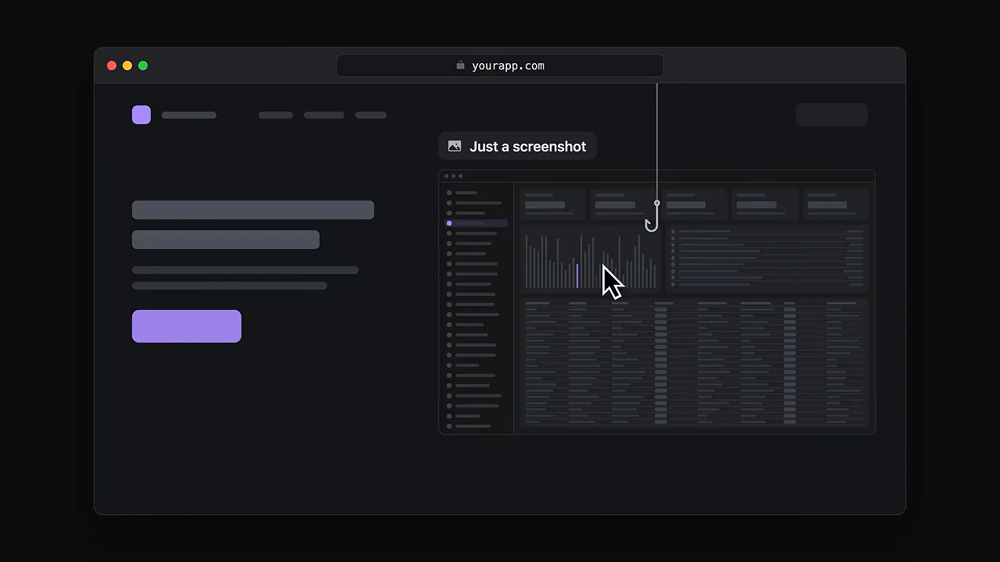
다른 방법은 Claude Code에게 앱의 애니메이션 데모를 만들어 달라고 하는 거예요. 그런데 Benji는 이렇게 받은 데모가 투박하고 과하다고 말해요. 움직임이 매끄럽지 않고, 화면에서 일어나는 일이 말이 안 될 때도 있어요.
원인은 Claude가 데모를 만드는 방식에 있어요. 앱을 코드로 대충 그린 다음 움직이게 만드는데, 그 그림은 '일반적인 앱'이지 내 앱이 아니에요. 아래 화면은 왼쪽 'your app'과 오른쪽 'the picture'를 겹쳐 놓고, 서로 다른 부분을 빨간 칸으로 표시했어요. 거의 모든 영역이 빨갛게 덮여 있어요.
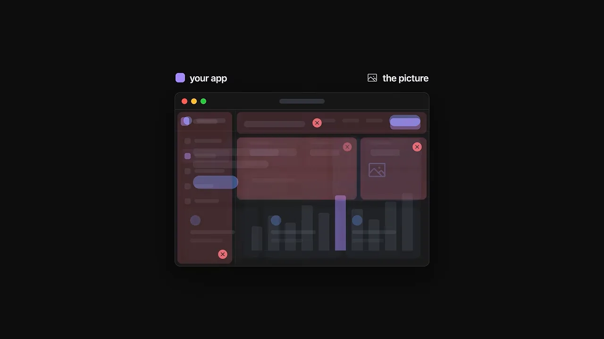
Benji도 좋은 모델은 이미 이런 데모를 꽤 비슷하게 만든다고 인정해요. 문제는 꼭 작은 디테일 하나가 티를 내서 전체가 엉성해 보인다는 거예요. 그는 이렇게 데모가 망가지는 모습을 다섯 가지로 이름 붙였어요.
영상 제작진은 이 중 bland를 가장 자주 겪었다고 해요. 특정 스타일을 요청했는데 돌아온 데모에는 그 스타일이 없는 경우예요. too much는 에이전트가 화면 구석구석에 글자와 숫자를 밀어 넣는 경우예요. 아래 화면처럼 Revenue $48,210, Users 12,904, Orders 3,571 같은 숫자 카드에 주간 매출 차트, 오른쪽 금액 목록까지 한꺼번에 들어가면 스크린샷과 똑같이 어디를 봐야 할지 몰라요.
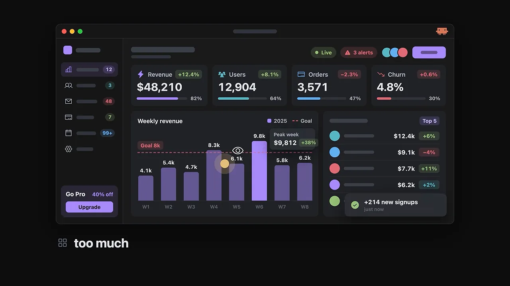
wireframe은 그 반대예요. 에이전트가 모든 걸 회색 상자 몇 개로 줄여 버려서, 더는 내 앱처럼 보이지 않아요. 아래 화면에서 위쪽 'your app' 글자에 취소선이 그어진 게 그 뜻이에요.
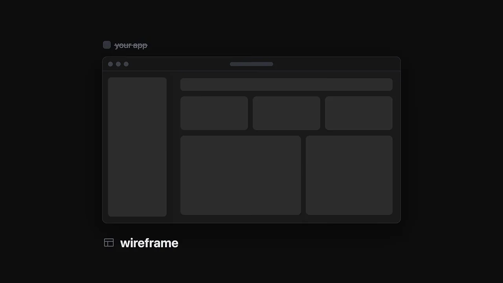
나머지 둘도 있어요. boxed는 앱 전체를 작게 줄여 카드 하나 안에 넣어 버리는 경우이고, flat은 화면의 모든 요소가 똑같아 보여서 눈에 띄는 게 없는 경우예요.
Stageshow는 무엇을 하나요
Claude가 데모를 엉성하게 만드는 건 좋은 데모가 어떻게 만들어지는지 모르기 때문이에요. Benji는 이런 데모를 손으로 많이 만들어 봤어요. 그의 말로는 데모의 어느 한 부분도 특별히 어렵지 않아요. 대신 데모 하나에 작은 결정이 100개쯤 들어가고, 그 하나하나가 화면에 드러나요.
아래 화면 왼쪽 '100 decisions' 카드의 점 하나하나가 그 결정이에요. 점들이 오른쪽 앱 화면으로 날아가 각자 자리를 잡아요. Claude는 앱이 대충 어떻게 생겼는지 알아서 그럴듯한 걸 그리지만, 이 수준을 얻으려면 결정들을 매번 다시 알려 줘야 해요.
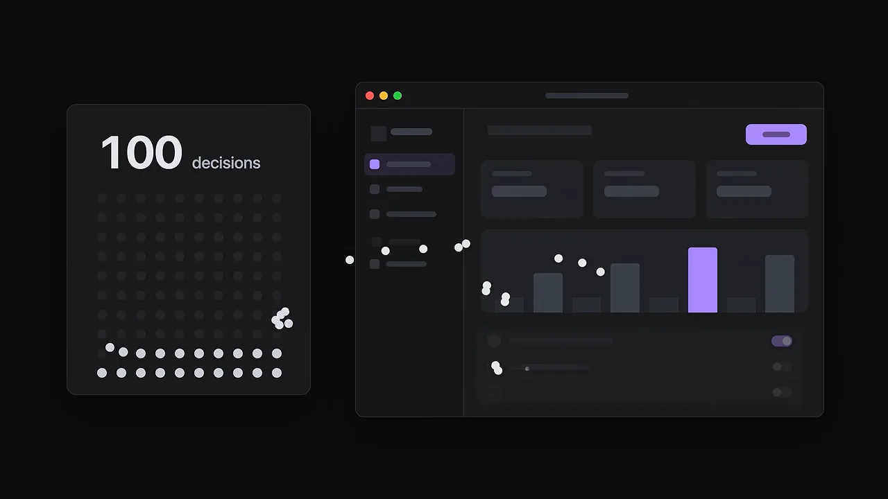
그래서 Benji는 데모를 만들 때 내리는 결정을 전부 적어 스킬로 묶고 Stageshow라고 이름 붙였어요. 에이전트가 같은 결정을 스스로 내릴 수 있게 하려는 거예요.
Taste sounds mysterious, but most of taste is just small decisions you make over and over until you know which ones work.
취향은 신비롭게 들리지만, 대부분은 어떤 게 통하는지 알 때까지 반복해서 내리는 작은 결정이에요.
— 영상 03:18 (Benji의 말을 영상이 옮긴 것)
즉 이 스킬은 Benji의 디자인 과정 그 자체예요. 그는 자기 취향을 에이전트에게 몇 번이고 다시 설명할 필요가 없고, 에이전트는 스킬의 규칙을 보고 알아서 판단해요.
진짜 앱이 아니라 데모 전용 복사본을 만들어요
여기서 헷갈리기 쉬운 점이 있어요. Stageshow는 실제 앱을 랜딩 페이지에 올리지 않아요. 앱 화면 하나를 데모만을 위해 단순하게 다시 만들고, 그 안의 실제 단어는 몇 개만 남겨요. 그 위에서 미리 짜 둔 짧은 이야기를 재생해요.
아래 화면 위쪽 'Storyboard'에 장면 세 칸과 1·2·3 번호가 있어요. 그 아래가 데모 화면인데, 목록 행은 글자 대신 회색 막대이고 오른쪽 위에 '+ Add' 버튼만 진짜 글자예요. 그려 넣은 커서가 이 버튼을 누르면 새 항목이 목록으로 미끄러져 들어와요.
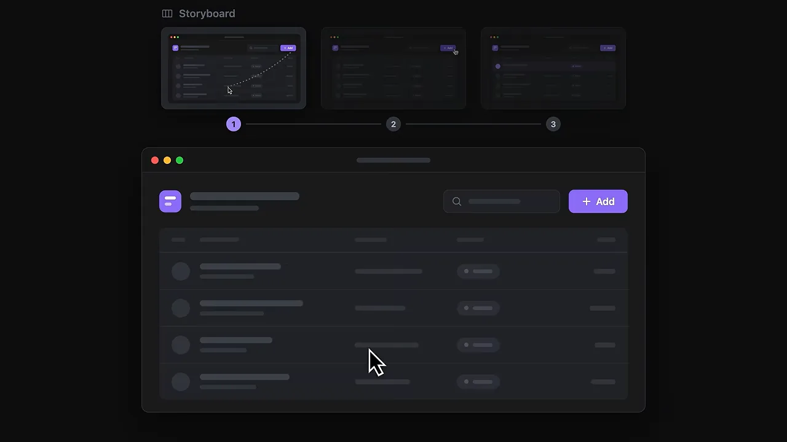
결과물은 랜딩 페이지에 새로 생기는 섹션 하나예요. 사이트의 나머지 디자인은 만들어 주지 않아요. 이 스킬이 아는 건 애니메이션 데모뿐이라, 이미 사이트에 있는 스타일 위에 얹어서 만들어요.
일곱 단계로 데모를 만들어요
Stageshow의 기능 하나하나는 Benji 디자인 과정의 한 단계이고, 단계는 모두 일곱 개예요. 눈여겨볼 점은 대부분이 계획이라는 거예요. 에이전트는 데모 전체를 먼저 설계하고 나서야 만들기 시작해요.
1. 어디에, 얼마나 크게 둘까요
첫 단계는 데모가 페이지 어디에 들어가는지 정하는 거예요. 정지 이미지로 둘지 애니메이션으로 둘지, 크기는 얼마로 할지도 여기서 정해요. 아래 화면 위쪽에 'Still'과 'Animation' 두 선택지가 있고, 데모 창 둘레의 조절점이 크기를 정하는 모습을 보여 줘요.
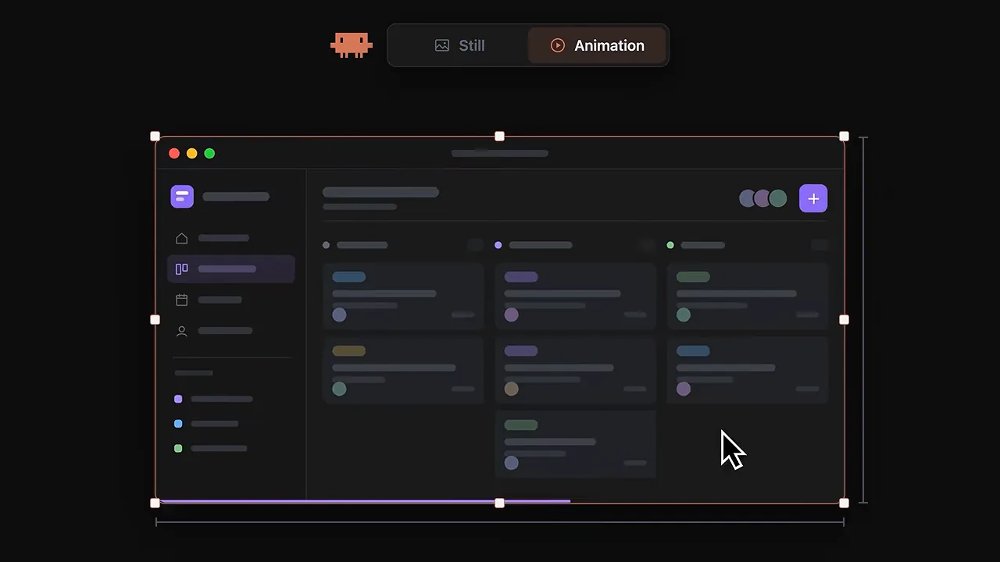
에이전트는 휴대폰용 데모를 따로 만들어요. 대부분의 에이전트는 같은 디자인을 줄여서 맞추지만, Stageshow는 휴대폰과 데스크톱을 서로 다른 화면으로 다뤄요. 아래 휴대폰 화면은 원형 진행 표시, 막대 차트, 토글 목록이 세로 한 줄로 다시 배치돼 있어요. 그래서 처음부터 그 화면에 맞춰 만든 것처럼 보여요.
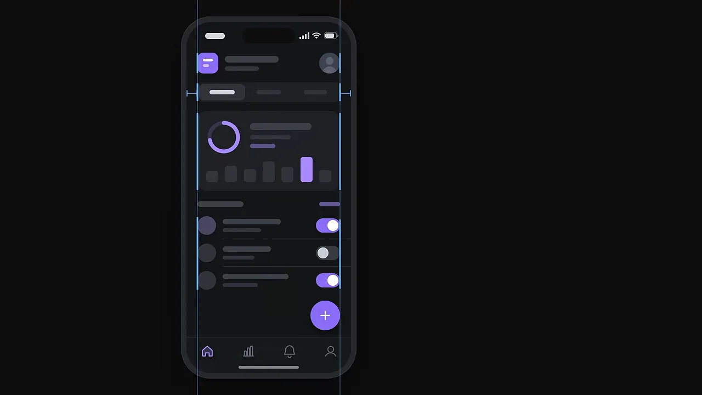
2. 내 앱의 모습을 읽어 와요
위치가 정해지면 데모의 생김새를 정해요. 에이전트가 앱의 색, 폰트, 모서리가 얼마나 둥근지까지 읽어 오는 단계예요. 아래 화면은 왼쪽 'your app'(어두운 보라색 대시보드), 가운데 'template'(흰 바탕에 파란 버튼), 오른쪽 결과 데모를 나란히 놓았어요. 결과는 템플릿이 아니라 왼쪽 앱의 색과 모양을 따라가요.
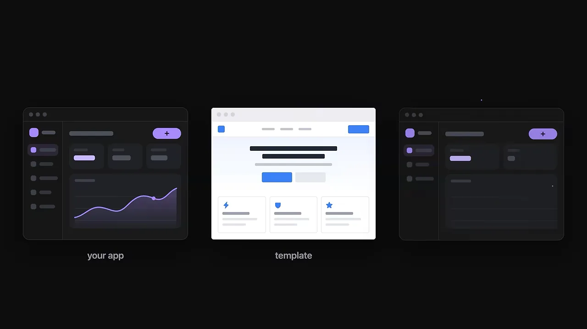
3. 이야기를 짜요
다음은 이야기예요. 모든 데모는 동작 하나를 3~5개의 작은 순간으로 나눠서 10~16초 동안 보여 줘요. 이야기를 더 넣을지 화면을 단순하게 둘지 고민될 때 Benji는 언제나 단순한 쪽을 골라요.
4. 실제 예시에서 출발해요
그래도 계획은 말일 뿐이라, 다음 단계는 실제 예시에서 시작하는 거예요. Stageshow에는 Benji가 직접 만든 데모가 40개쯤 들어 있고, 에이전트는 요청과 가장 가까운 것을 베껴서 출발해요. 아래 화면 위쪽 'Your request'가 요청이고, 가운데 'Stageshow' 폴더에 'Benji · ~40 demos'라고 적힌 예시 격자가 있어요.
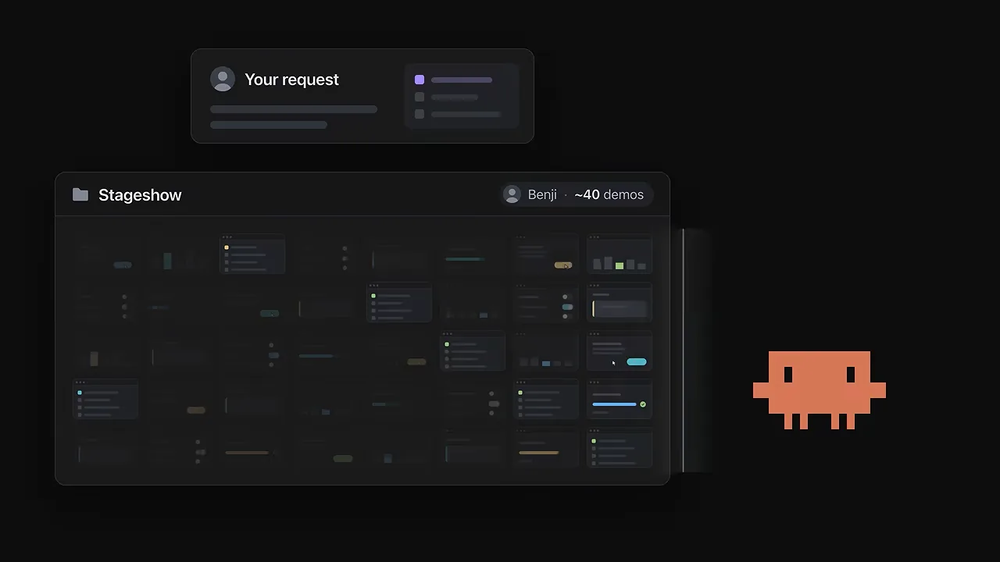
Benji가 이렇게 만든 이유가 있어요. 규칙만으로는 어느 정도까지만 됐고, 베낄 실제 예시가 있을 때 에이전트가 훨씬 잘했기 때문이에요.
5. 실제 단어는 3~7개만 써요
출발점이 정해지면 에이전트가 화면을 채워요. 화면 전체에 실제 단어는 3~7개만 쓰고, 나머지는 글자 자리를 대신하는 막대로 바꿔요. 앞에서 본 too much를 피하는 방법이에요. 아래 화면은 'Projects' 목록 옆에 'real words' 카운터가 55를 가리키고, 그 아래 3과 7 사이 구간이 표시된 슬라이더가 있어요. 55개나 되는 실제 단어를 3~7개로 줄여야 한다는 뜻이에요.
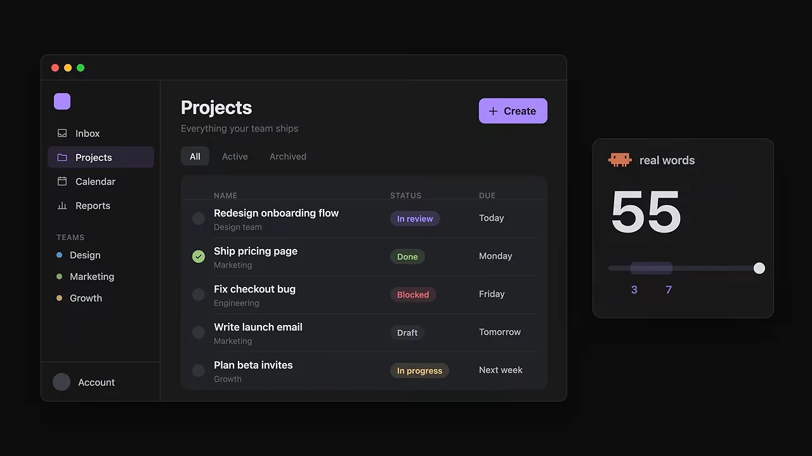
6. 모든 움직임에는 이유가 있어요
그다음은 움직임이에요. 화면의 모든 움직임에는 이유가 있어야 해요. 커서는 사람 손처럼 곡선을 그리며 움직이고, 각 요소는 툭 튀어나오지 않고 미끄러지듯 자리를 잡아요.
데모는 반복 재생되는데, 마지막 순간이 첫 순간과 맞아떨어져서 다시 시작하는 티가 나지 않아요. 아래 화면은 장면들을 타원 위에 둥글게 이어 놓고 가운데에 'No seam' 표시를 달았어요.
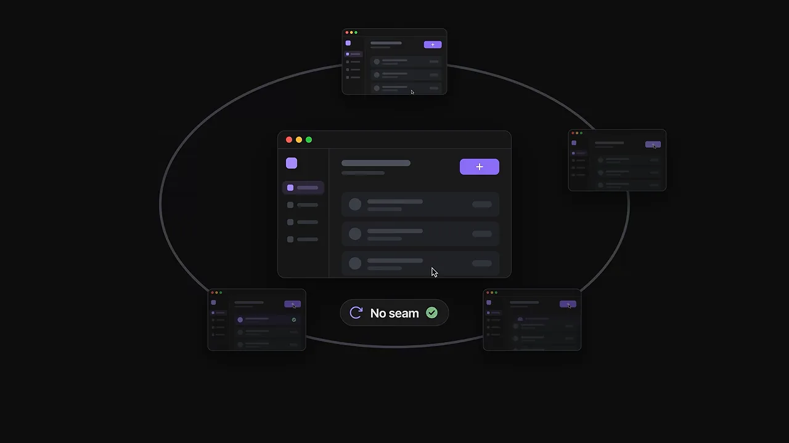
7. 녹화해서 스스로 검사해요
마지막 단계는 에이전트가 자기 결과물을 검사하는 거예요. 영상은 이 방식이 다른 디자인 스킬에는 없다고 강조해요. 보통 에이전트는 코드를 다시 읽거나, 움직임이 다 멈춘 뒤 스크린샷을 찍어서 확인해요. 둘 다 중간의 움직임은 보지 못하는데, Benji는 문제가 대개 바로 거기에 있다고 말해요. 그가 든 예는 미끄러져 들어오면서 살짝 튀는 버튼, 그리고 모든 게 한꺼번에 사라지는 찰나의 순간이에요.
그래서 Stageshow는 데모가 재생되는 모습을 녹화하고, 모든 순간을 한 장에 나란히 늘어놓아요. 아래 화면 위쪽 데모 창 옆에 'REC' 표시가 있고, 아래 'Stageshow' 판에 녹화한 순간들이 두 줄로 펼쳐져 있어요. 커서 위치가 칸마다 조금씩 다른 게 보여요.
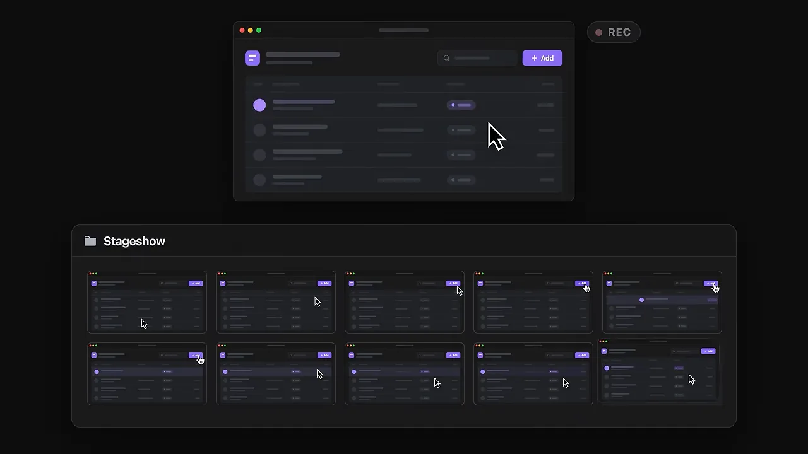
그다음 작은 프로그램이 이 시트에서 칸을 넘친 글자나, 한 순간에서 다음 순간으로 넘어갈 때 튀는 요소를 찾아요. 에이전트는 가장 큰 문제부터 고치고 다시 녹화해요. 검사를 통과하기 전에는 데모를 넘겨줄 수 없어요.
flowchart LR
A["데모 녹화"] --> B["모든 순간을 한 장에 펼치기"] --> C{"프로그램 검사 통과?"}
C -->|아니요| D["가장 큰 문제부터 고치기"] --> A
C -->|예| E["넘겨주기"] --> F["사람이 직접 보고 판단"]
다만 검사에도 한계가 있고, Benji 스스로 그렇게 말해요. 검사는 실수를 잡아낼 뿐, 데모의 아이디어가 지루한지는 알려 주지 못해요. 그래서 데모는 결국 직접 봐야 해요.
설치하고 플레이그라운드로 둘러봐요
설치 명령은 Benji의 GitHub나 웹사이트에서 복사할 수 있어요. 아래 화면은 웹사이트의 'Getting started' 부분이에요. 노란 테두리 안의 한 줄이 설치 명령이고, 그 아래에 처음 시도해 볼 요청 예시('A small looping demo for our homepage hero…')가 있어요.
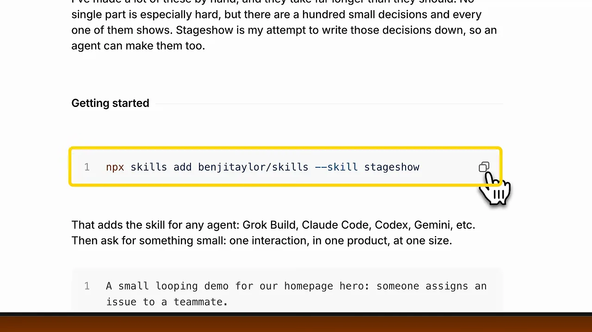
npx skills add benjitaylor/skills --skill stageshow이 명령을 프로젝트가 열린 터미널에서 실행하면 설치 과정이 몇 가지를 물어요.
- 어떤 에이전트용으로 설치할지 골라요 — 기본값은 Codex 등 많은 에이전트가 이미 쓰는
.agents폴더에 넣는 방식이라 대부분의 에이전트에 한 번에 적용돼요. 특정 에이전트만 원하면 목록에서 골라요. 'Which agents do you want to install to?' 질문과 함께 'Universal (.agents/skills)' 아래 에이전트 목록이 떠요 - 설치 범위를 정해요 — 지금 프로젝트에만(Project) 넣을지, 컴퓨터의 모든 프로젝트에(Global) 넣을지 골라요. 영상은 지침이 필요한 폴더에 머물도록 프로젝트에만 설치했어요.
- 나머지 단계를 넘기면 설치가 끝나요 프로젝트 폴더 안에 스킬 폴더가 생겨요
아래 화면이 첫 번째 질문이에요. 위에 '79 agents'라고 나오고, 'Universal (.agents/skills)' 상자 안에 Amp, Cline, Codex, Cursor, Gemini CLI(Command Line Interface), GitHub Copilot 같은 이름이 늘어서 있어요. 이 목록의 에이전트는 따로 고르지 않아도 항상 포함돼요.
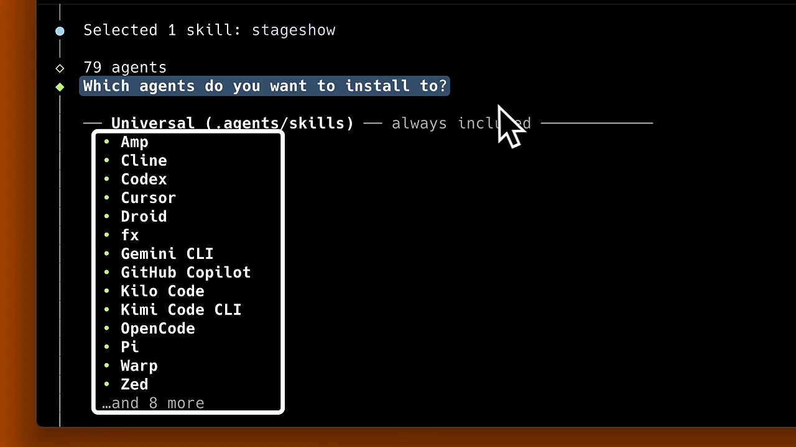
.agents 폴더 하나로 여러 에이전트가 같은 스킬을 읽어요. 영상 08:16에서 보기다음 질문은 설치 범위예요. 화면에서 'Project'에 '(Install in current directory (committed with your project))'라는 설명이 붙어 있어요. 프로젝트와 함께 커밋된다는 뜻이에요.
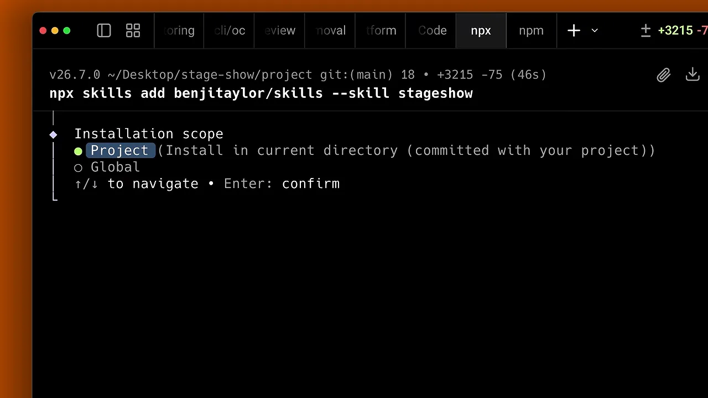
스킬 폴더 안에는 무엇이 있나요
프로젝트를 열면 스킬 폴더가 보여요. 아래 화면 왼쪽 탐색기에서 .claude/skills/stageshow 아래에 assets, examples, kit, playground, references, scripts, teaching 폴더가 있어요. 오른쪽에 열린 SKILL.md는 스킬이 무엇을 하고 딸린 자료를 어떻게 쓰는지 설명하는 파일이에요.
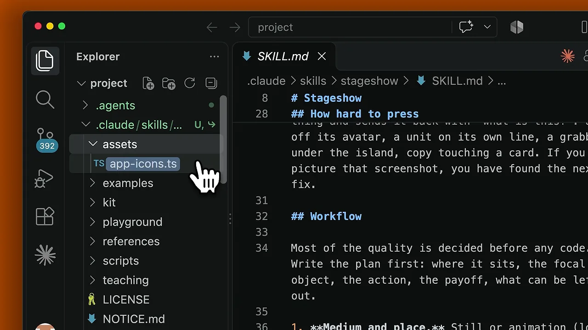
app-icons.ts가 앱에서 흔히 쓰는 아이콘 모음이에요. 영상 08:56에서 보기references 폴더에는 스킬 각 부분의 사용법을 담은 참고 파일이 있어요. 영상이 예로 든 건 벤토 그리드용 파일이에요. 랜딩 페이지에서 흔히 보는, 크기가 다른 상자들을 모은 격자예요. 이 파일에는 벤토 그리드를 의도적이고 보기 좋게 만드는 규칙과 가장 많이 쓰이는 스타일 예시가 들어 있어요.
플레이그라운드로 예시 둘러보기
설치한 뒤 Claude에게 'Stageshow 플레이그라운드를 열어 줘'라고 하면, 지침을 읽고 플레이그라운드 서버를 띄워 화면을 열어 줘요. 장면 목록에서 각 장면이 어떤 움직임을 쓰는지 보고, 휴대폰과 데스크톱에서 각각 어떻게 보이는지도 확인할 수 있어요. 휴대폰에서는 장면이 그냥 작아지는 게 아니라 작은 화면에 맞게 다시 배치돼요.
아래 화면은 장면 목록을 펼친 모습이에요. Slack, Raycast, Finder, Spotify, Notion, Google Docs, Gmail, Google Calendar, PowerPoint, Excel 같은 유명 제품 데모가 있고, 아래쪽 'Kit'에는 Backgrounds, Visual styles, Brand marks처럼 데모를 직접 조립할 때 쓰는 부품이 있어요.
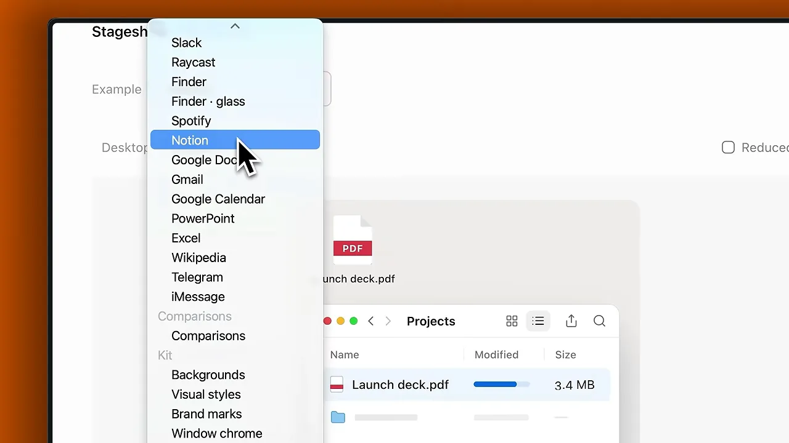
리듀스드 모션 버전도 볼 수 있어요. 기기에서 애니메이션을 꺼 둔 사람이 보게 되는 정지 화면이에요. 아래 화면 오른쪽 위 'Reduced motion'에 체크하면 'Buttons' 데모가 멈춘 상태로 보여요. 아무것도 움직이지 않아도 앱이 무엇을 하는지 전달되는지 여기서 확인해요.
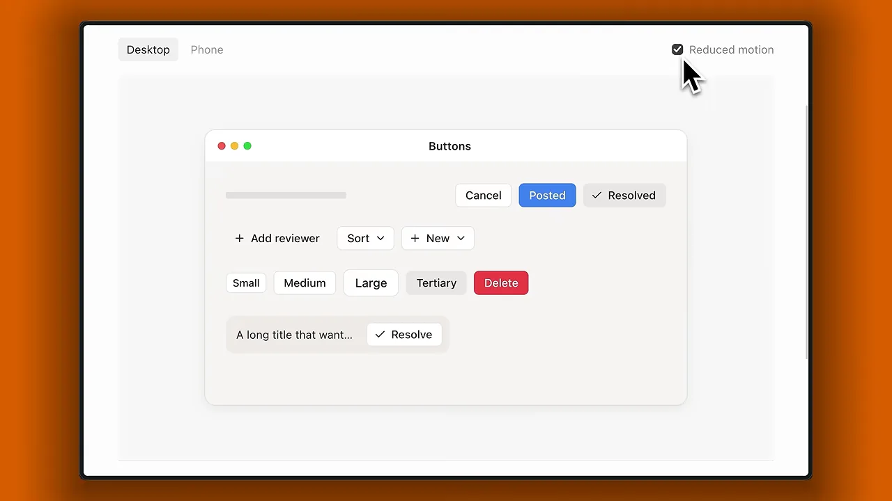
실제 앱에 붙여 봤어요
제작진은 실제 앱으로 시험해 봤어요. 먼저 Claude에게 비트를 만드는 음악 스튜디오 데모 앱을 만들게 했고, 앱 자체는 제대로 만들어졌어요. 앱 이름은 화면에 보이는 대로 Encore예요.
문제는 랜딩 페이지였어요. 앞에서 본 것처럼 Claude는 애니메이션을 코드로 그림을 그려 디자인에 붙이는 식으로 만들어요. 아래가 그 첫 버전이에요. 'Make the song you hear in your head.' 문구 옆에 'Neon Tides'라는 스튜디오 창 그림이 있는데, 움직이긴 해도 실제 앱 모습이라기보다 지어낸 애니메이션이라 억지스러워요.
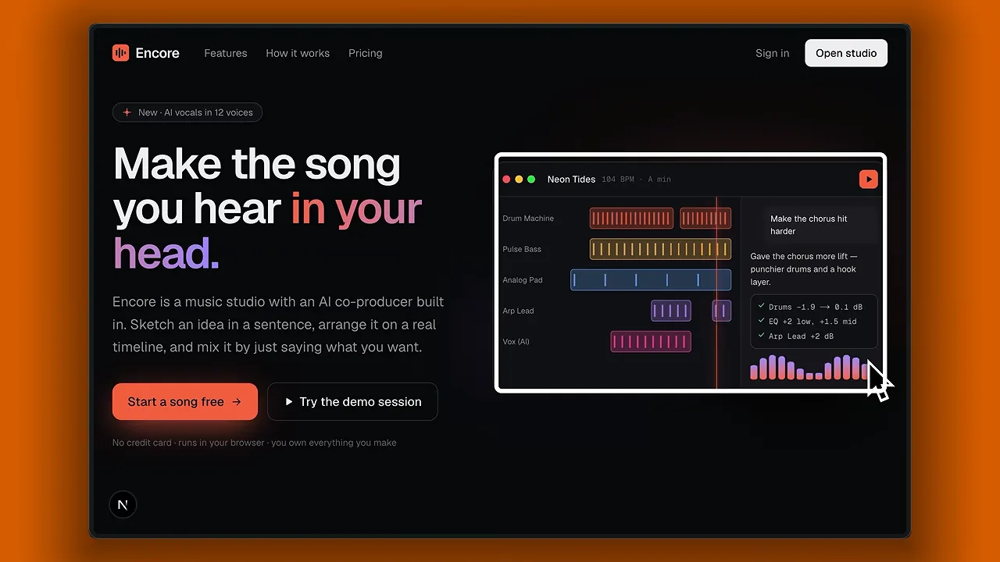
첫 버전의 기능 소개 그리드도 비슷해요. 'Timeline that understands music', 'Co-producer chat', 'Mixer you can feel', 'Generate any part', 'A library worth browsing' 다섯 칸에 색 블록과 슬라이더 그림이 들어 있어요.
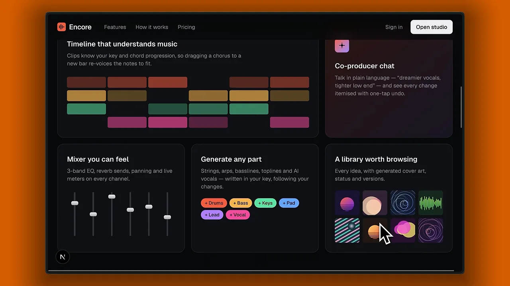
/stageshow로 다시 만들게 해요
방법은 간단해요. 쓰는 에이전트를 열고 슬래시 명령으로 스킬 이름을 부른 뒤, 사이트 곳곳에 필요한 애니메이션을 넣어 달라고 요청해요. 아래 화면의 Claude Code 입력란에 /stageshow 뒤로 그 요청이 적혀 있고, 바로 아래에서 에이전트가 references 폴더의 참고 파일들을 세고 읽기 시작해요.
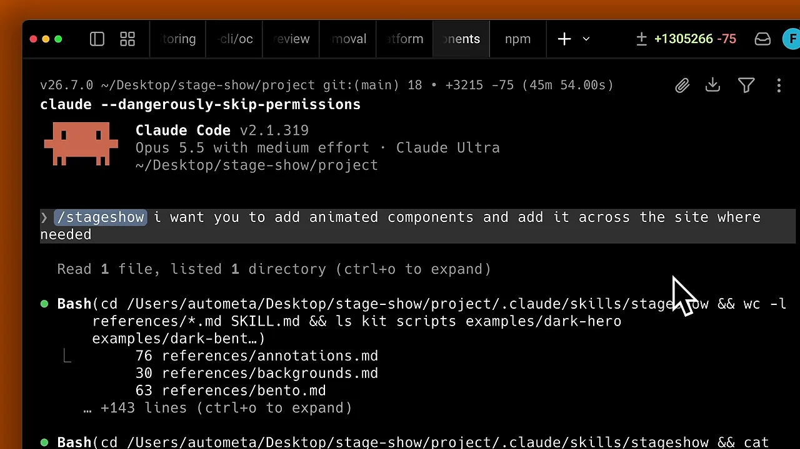
에이전트는 앱이 어떻게 만들어졌고 어떻게 생겼는지에 맞춰 새 섹션을 만들어요. 섹션 하나를 완성하면 랜딩 페이지에 넣고, 넣은 뒤에는 애니메이션을 녹화해요. 그리고 녹화를 프레임 단위로 넘겨 보며 의도대로 움직이는지 확인해요.
REHEARSAL.md: 에이전트의 인수인계 메모
작업이 끝나면 에이전트는 데모 옆에 REHEARSAL.md라는 파일을 남겨요. 어떤 Benji 데모에서 출발했는지, 무엇을 바꿨는지, 무엇을 확인했는지 적은 인수인계 메모예요. 아래 화면에서 히어로 데모(hero-demo.tsx)는 'dark-hero'와 'ai-chat' 예시를 베꼈고, 기능 데모(feature-demos.tsx)는 'bento' 예시를 따랐다고 적혀 있어요. 그 아래 요약에는 새 히어로와 기능 칸 세 개, 모두 네 개의 데모를 넣었고 데스크톱 폭과 390px 폭에서 모두 녹화했다고 나와요.
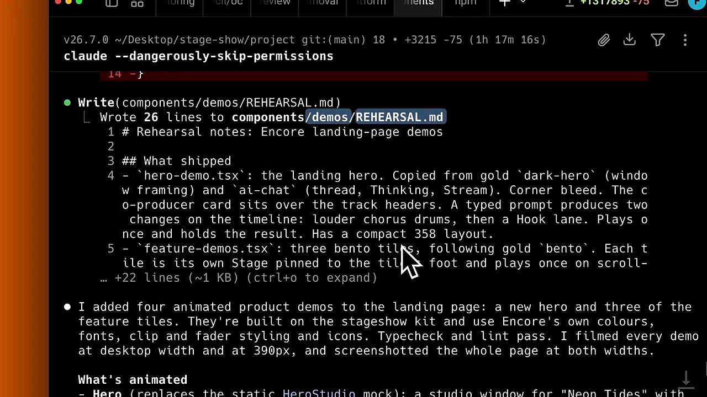
같은 보고의 뒷부분에는 'Still open'이라는 항목도 있어요. 녹화 도구의 마지막 검사가 아직 실패를 두 가지 이유로 보고하고 있다고 적혀 있어요. 하나는 부품 모음의 휴대폰 스타일에 관한 여섯 줄인데, 에이전트는 오탐이라고 판단했어요. 다른 하나는 히어로 채팅 카드의 간격 경고 두 개로, 일부러 남겨 뒀다고 해요. 실제 페이지의 리듀스드 모션, Safari·Firefox, 터치 기기, 768px 태블릿 화면은 확인하지 않았다고도 밝혀요.
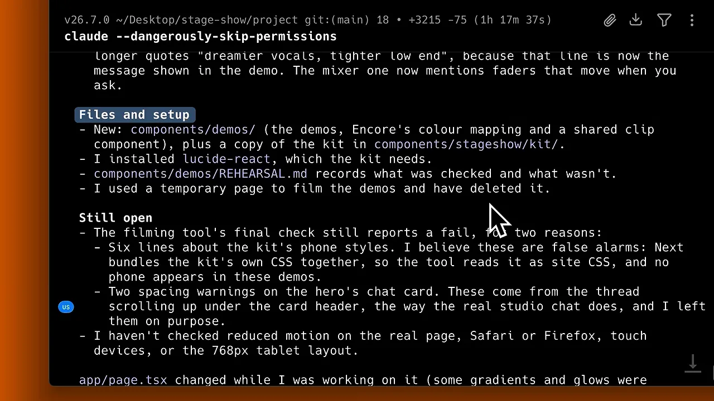
결과: 앱의 실제 조각이 들어간 랜딩 페이지
에이전트는 앱 안의 작은 조각들도 기능 소개 그리드에 넣었어요. 믹서와 비트 배치 화면이 들어갔고, 모두 애니메이션이 붙었어요. 아래 새 히어로를 보면 'Neon Tides' 트랙 창 앞에 'Co-producer' 채팅 카드가 겹쳐 있어요. 시각적 방향 없이 만든 첫 버전보다 훨씬 나아 보여요.
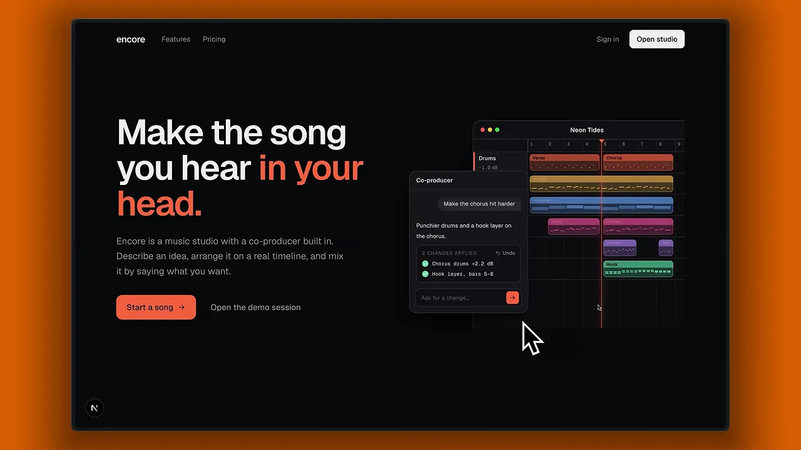
영상에 나온 두 버전을 나란히 놓으면 이렇게 달라요.
| 부분 | 스킬 없이 만든 첫 버전 | Stageshow 적용 후 |
|---|---|---|
| 히어로 | 코드로 그린 스튜디오 창 모형 | 트랙 창 앞에 채팅 카드가 겹친 데모, 요청이 입력되고 트랙이 바뀌는 이야기 |
| 기능 그리드 | 색 블록과 슬라이더 그림 | 믹서·비트 배치 같은 앱의 실제 조각에 애니메이션 |
| 확인 방법 | 따로 없음 | 녹화해 프레임 단위로 확인, REHEARSAL.md에 기록 |
그래도 데모가 한 번에 완벽하게 나오지는 않아요. Benji도 자기 데모가 보통 몇 번의 피드백을 거친다고 말해요. 어색한 부분이 보이면 무엇이 문제인지 평범한 말로 에이전트에게 알려 주면 고쳐요. 그리고 그 내용을 스킬에 추가해 달라고 하면, 다음 데모에서는 같은 문제가 생기지 않아요.